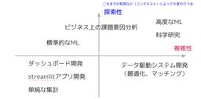

GO Tech Blog
https://techblog.goinc.jp/
GO Tech Blogは、タクシーアプリ『GO』を始めとして様々なサービスを展開しているGO株式会社が技術情報などを紹介するテックブログです。
フィード

スペック駆動開発をデータ分析にどう実践するか
GO Tech Blog
はじめに GO株式会社でデータサイエンスチームのマネージャーを務めている織田です。 この記事では、最近注目されているスペック駆動開発（Spec-Driven Development: SDD）が、データ分析プロジェクトにどこまで適用できるかを考察し、探索的なプロジェクトに適したアプローチを提案します。 SDDとは何か 「雰囲気」でコーディングエージェントに指示を出してコードを生成させるVibe Codingは、大規模で長期のシステム開発では破綻すると言われています。アーキテクチャを考慮しないスパゲッティコードの量産、対話が進むにつれてAIが初期要件を忘れるContext Drift、開発者がコ…
6日前

2人客が増えるとラーメン屋は潰れるか
GO Tech Blog
はじめに こんにちは、AI技術開発2グループの田村です。普段はデータ分析を通したプロダクト改善に従事しています。 今回は業務とは直接関係のない、個人的な興味から取り組んだ話題をご紹介します。 先日ラーメン屋に行った時、気になった場面に出くわしました。 店内はよくあるカウンター席のみで、自分の前の番は2人組のお客さんが並んでいました。 店はこの2人客を隣り合う席に案内しようとしていて、運用としては次のようなものでした。 空席ができても、隣同士で空いていなければ2人組は案内しない 2人客の後ろに1人客が並んでいても、1人客を先に案内しない（順番は守る） こうした運用はラーメン屋では珍しくなく、2〜…
22日前
二部グラフの最大重みマッチングとその解法
GO Tech Blog
高速マッチングを実現する！二部グラフの最大重みマッチングとその解法 こんにちは！AI技術開発部の木村彩恵です。 業務では、タクシーアプリ『GO』の中核技術である、乗客からのリクエストに対し配車するタクシーを決定するマッチングエンジンの開発に携わっています。 タクシーアプリ『GO』のマッチングエンジンでは、マッチングの全体最適を実現するために、一つ一つのリクエストに対して都度タクシーを決定するのではなく、一定周期ごとに複数のリクエストに対して一括でタクシーを決定します。 このとき、迎車時間などのリクエストとタクシー間の様々な条件を重みつき二部グラフで表現し、最大重みマッチング問題を解くことでマッ…
25日前
GO TechTalk #32 タクシーアプリ『GO』の最強SREチーム
GO Tech Blog
こんにちは！バックエンドエンジニア兼技術広報担当のもぎです。2026年1月27日に、「GO TechTalk #32 タクシーアプリ『GO』の最強SREチーム」（connpass）を開催しました！ この記事では、イベント当日の内容を簡単に紹介します。 GO TechTalkとは？ GO TechTalkは、GO株式会社のエンジニアたちが、タクシーアプリ『GO』をはじめとしたサービスやプロダクトを開発する中で得た技術的ナレッジを共有するイベントです。 タクシーアプリ『GO』では、全国規模で稼働するリアルタイム性の高いシステムを安定して提供するため、高い可用性と信頼性を前提としたインフラ設計・運用…
2ヶ月前
AWS STSのSession Tagを使った一時トークンに付与する必要十分なS3権限の動的管理
GO Tech Blog
こんにちは、こんにちは、SREグループの浜地です。 GO株式会社では、ユーザ向けのタクシーアプリ『GO』をはじめとして乗務員向け端末やタクシー後部座席タブレットなど、様々な種類の端末アプリを開発しております。 これらの端末アプリからファイルのアップロード・ダウンロードなどのためにAWS S3へアクセスが必要なユースケースがあるのですが、新しい機能提供のためにAWS STSのSession Tagを使った方法にて一時トークンを払い出し、必要十分なS3の権限を払い出す方法を今回採用しました。その内容についてご紹介します。 構成概要と要件 事情により詳細に記載できないためある程度簡略化しますが、構成…
2ヶ月前
RSGT2026に参加しました！
GO Tech Blog
RSGT2026に参加しました Webプロダクト開発部 Webプロダクト1グループのグループマネージャーをしている伊藤です。 今回初めてRegional Scrum Gathering Tokyo 2026に参加してきました。３日間、多くのセッション、Open Space Technology（OST）、懇親会に現地参加してきました。最も大きな収穫としては、自身のチームにおける複数プロダクト体制を「制約」から「可能性」へとリフレーミングできたことです。参加前のモヤっとした課題感が、セッションや対話を重ねるごとに次々と晴れていく。そんな手応えのある体験ができました。その中での学びや感じたことを共…
2ヶ月前
新人エンジニアマネージャーが受けた研修と気付き
GO Tech Blog
こんにちは。バックオフィス基盤開発部第1グループの廖です。 2025年6月から所属グループのエンジニアリングマネージャーに就任してすでに半年以上経ちました。現在の私のチームは、決済系のサービス開発を担う、7名規模の体制です。 エンジニアからマネージャーに立場が変わった当初は、心の中で葛藤や不安が多少ありました。この数ヶ月の間に社内で複数のマネージメント研修を受ける機会をいただき、多くの学びを得たので、ここで研修内容とそこから得られた気づきをご紹介していきたいと思います。 同じくEMに就任したばかりで、孤独や葛藤を感じている方のヒントになれば幸いです。 マネジメントを理論と実践知から学ぶ 株式会…
2ヶ月前
RSGT2026に参加しました！
GO Tech Blog
RSGT2026に参加しました バックオフィス基盤第2グループの名嘉眞です。 今年も去年に引き続き、Regional Scrum Gathering Tokyo 2026(以下RSGT2026) に参加しました。 去年もそうでしたが、今年も多くの学びや気づきがありました。私の視点で体験したことや感じたことを共有できればと思います。 RSGT2026とは Regional Scrum Gathering Tokyo 2026は、スクラムやアジャイル開発に関連する国内最大級のカンファレンスです。 Gatheringとあるようにセッションを聴講するだけでなく、休憩時間や会場の廊下、懇親会など至るとこ…
2ヶ月前
GoogleDocsの箇条書きをSlackにきれいにコピペするツールを生成AIと作った話
GO Tech Blog
（本ブログはGO Inc. Advent Calendar 2025の一部です） はじめに GO株式会社でエンジニアマネージャをしている渡部です。 このブログを執筆しているのは2025年12月なのですが、いつからかGoogle Docsの箇条書きをSlackにコピペしようとすると、 箇条書きのインデントレベルが保持できなくなっており、非常に困っていました。 例えば、このようなGoogle Docsの箇条書き これをSlackにコピーすると とフラットな箇条書きでコピーされてしまいます。 これでは業務上困りますので、生成AIを使ってサクッとツールを作りました。会社ではVS Code + Gith…
2ヶ月前
PythonのETLライブラリ「DLT」を導入してみた話
GO Tech Blog
PythonのETLライブラリ「DLT」を導入してみた話 今回は、BigQuery にデータを取り込む用途で DLTという Python ライブラリを導入してみた経験について軽く紹介します。 導入するまでの経緯 データプラットフォームチームでは、多様なデータを扱っており、さまざまな外部ソースからデータを GCP（Google Cloud Platform）環境に取り込んでいます。これらのデータは、分析やレポート作成をはじめとした用途のために加工され、BigQueryのテーブルやviewとして社内で提供されています。 データソースや提供パターンの多様性に伴い、データ取り込みや変換用のツールも数多…
3ヶ月前
SQLでサービスのイベントログを集計する際のTips
GO Tech Blog
（本記事はGO Inc. Advent Calendar 2025 も兼ねています） こんにちは、AI技術開発部の西川です。 普段は主にタクシーアプリ『GO』の乗務員端末の挙動解析をしています。 今回はSQLでサービスのイベントログを集計する際によく使うTipsとして、ある時点で発生したイベントを有効期間付きの状態に変換する方法と、複数の状態を組み合わせて集計する方法について紹介します。 BigQueryの構文と関数で記載しますが他のRDBでも概ね適用できると思います。 サービスのイベントログの例 サービスによって様々な種類のイベントログが存在すると思います。 例えば『GO』の乗務員端末であれ…
3ヶ月前
チュートリアルより少し踏み込んだOR-Tools
GO Tech Blog
はじめに この記事は GO Inc. Advent Calendar 2025 の21日目です。 AI技術開発部の小南です。 この記事ではOR-Toolsで解くルート最適化について、公式のチュートリアルより少し詳しい解説を行います。 制約条件の設定をカスタマイズしたくなった時などに、基本的な使い方の理解を深めておきたい方向けの内容となります。 ルート最適化について そもそもルート最適化とはどのような問題を指すのでしょうか。 複数の地点を効率的に回るルートを考える問題で、一般的には「巡回セールスマン問題 (TSP)」や、それを複数車両に拡張した「配送計画問題 (VRP)」として知られています。 …
3ヶ月前
POI検索の失敗ログから見えた「誤字脱字」と「ユーザーの真の意図」
GO Tech Blog
こんにちは、AI技術開発部の齋藤智輝です。 この記事は、GO Advent Calendar 2025 19日目の記事です。 タクシーアプリ『GO』の目的地検索（POI検索）において、私たちはユーザー体験を損なわないよう 「検索速度」 を非常に重視しています。しかし、速度を最優先する検索アルゴリズムを採用しているがゆえに、少しの誤字や脱字が含まれるだけで検索結果が0件になってしまうという課題を抱えていました。 今回は、この課題に対して私たちがどのようにアプローチしたか、そして分析を進める中で見えてきた「誤字脱字以外の課題」についてお話しします。 誤字脱字は誰にでも起きる、でも対応は難しい 実際…
3ヶ月前
チームで生成AI勉強会を半年間やってみた話
GO Tech Blog
こんにちは。データプラットフォームグループの牧瀬です。今回は、チームで生成AI勉強会を実施した話を紹介します。 本記事は GO Inc. Advent Calendar 2025 の 13日目の記事です。 どういうチームか / チーム内勉強会 我々のチームはデータプラットフォームグループという名称です。 名前の印象とは異なり、いわゆるデータ基盤(分析基盤)の開発、運用から、諸々の機械学習基盤、機械学習を利用したサービス、 比較的タクシー配車に近い所のサービスまで、幅広く手がけています。 我々のチームでは、その時々でやり方を変えながら、場合によってはメンバーの入れ替わりもありながら、細々と勉強会…
3ヶ月前
アーキテクチャーConference2025参加レポート
GO Tech Blog
バックオフィス基盤第1グループの廖です。 アーキテクチャーConference2025に参加してきました。 2日間にわたるセッションを通じて、多くの学びを得ました。特に印象に残ったポイントと、これまでの開発経験を交えて感想をシェアしたいと思います。 学び 1. マイクロサービスは目的ではなく、あくまでも手段の１つである 1日目の「モダナイズの現実と選択：マイクロサービスが最適解か？」の基調講演で、講演者のSam Newmanさんは過去にコンサルとして企業から依頼を受けた際に一番怖い言葉が「We are doing microservices」だと語っていました。一部の企業では、上層部がマイクロ…
3ヶ月前
【Dataform 運用改善】Airflowで実行されるDataformの可視化とCLIコマンドの誤実行防止
GO Tech Blog
タクシーアプリ『GO』の分析基盤を開発運用している伊田です。本記事では、Google Cloud の Dataform の運用改善について紹介します。 ※ 本記事の対象読者は Dataform を利用している方を対象にしています この記事は、GO Advent Calendar 2025 17日目の記事です。 はじめに データ基盤チームでは、BigQuery 上でデータの変換処理を行うために Dataform を利用しています。今回は Dataform を運用していく中で改善した2つの事例を紹介します。 1つ目は Cloud Composer (Airflow マネージドサービス。以後 Air…
3ヶ月前
DBに5億件のデータを安定稼働で取り込むためにやったこと
GO Tech Blog
こんにちは。 バックオフィス基盤1グループの福永です。 普段は決済基盤の開発や不正利用対策に従事しています。 業務の中でDBに5億件のデータを取り込むバッチを作成しました。 今回はバッチ作成にあたり意識したこと、工夫点などをご紹介します。 概要 タクシーアプリ『GO』の不正利用をより効果的に防ぐため、現在の対策に加え、 ユーザーのメタデータを使った新しいチェック機能を導入します。 この新機能では、不正判定を行うためのデータとして約5億件の判定用データを用います。このデータとユーザーのメタデータを照合することで、不正利用を判断する仕組みです。 ここで用いる判定用データはcsvファイルなので、検索…
3ヶ月前
アーキテクチャConference2025にて「AIエージェントのためのゼロトラスト・アーキテクチャ」について登壇してきました
GO Tech Blog
こんにちは！ GO株式会社のWebプロダクト開発部に所属しております、小堀と申します。 アーキテクチャConference2025にセキュリティと柔軟性を両立する！AIエージェントのためのゼロトラスト・アーキテクチャというタイトルで発表してきたので、振り返りも兼ねて登壇内容を記事にしたいと思います。 セキュリティと柔軟性を両立する！ AIエージェントのためのゼロトラスト・アーキテクチャ by @anneau 背景 Claude CodeやGemini CLI、Codex等、AIエージェントを用いた開発は便利である一方、セキュリティ的なリスクを抱えていると考えています。 ホスト汚染のリスク …
4ヶ月前
会社の色の出る技術同人誌を作る
GO Tech Blog
こんにちは、AI技術開発3グループの森下です。 弊社の有志グループで、技術同人誌即売会"技術書典"にサークルとして参加し、弊社の色を出した技術同人誌を頒布しました。 本記事では、その書籍の紹介と、どのように作成されたのかを紹介します。 技術書典とは 技術書典とは、日本最大規模の技術をテーマにした同人誌即売会です。 techbookfest.org 年2回開催され、Web上で購入ができるオンラインイベントと、会場でのオフラインイベントの2つの形式で開催されます。 300以上のサークルが参加し、オフライン会場には3,000人ほどの人が技術を求めて集まります。 参加していて、かなり熱量の高いイベント…
4ヶ月前
GO TechTalk #31 タクシーアプリ『GO』におけるNext.jsの活用
GO Tech Blog
こんにちは！バックエンドエンジニア兼技術広報担当のもぎです。2025年10月22日に、「GO TechTalk #31 クラウドコスト削減 祭り」（connpass）を開催しました！2025年1月以来の開催となりましたが、多くの方に視聴いただき、質問もたくさん飛び交う大変活気のあるイベントになりました。 この記事では、イベント当日の内容を簡単に紹介します。 GO TechTalkとは？ GO TechTalkは、GO株式会社のエンジニアたちが、タクシーアプリ『GO』をはじめとしたサービスやプロダクトを開発する中で得た技術的ナレッジを共有するイベントです。 タクシーアプリ『GO』の印象が強い弊社…
5ヶ月前
バックエンド開発部で生成AIワークショップを実施しました
GO Tech Blog
こんにちは。最近、最も嬉しかったことは我がソフトバンク・ホークスがパ・リーグを制し、日本シリーズに駒を進めたことです。どうも、バックエンド開発部のP山 です。 GOでは現在、生成AIを活用した開発の取り組みを加速させています。先日、バックエンド開発部でGOENという社内制度を活用した生成AIワークショップを実施しました。本記事では、その内容と成果についてご紹介します。 GO全体での生成AI活用に向けて GOでは、エンジニアが生成AIを効果的かつ安全に活用できるよう、全社的なガイドラインを整備しています。このガイドラインでは、開発効率を向上させつつ、セキュリティやコンプライアンスにも配慮した利用…
5ヶ月前
DroidKaigi 2025 参加レポート
GO Tech Blog
タクシーアプリ『GO』のAndroidアプリを開発している山本です。 先日開催されたDroidKaigi 2025に参加してきました。 またGO株式会社はゴールドスポンサーとしてブースと車両を出展させていただきました。 本記事ではイベント当日の様子やブース出展、セッションについて紹介します。 DroidKaigiとは DroidKaigiは、年に一度開催される、Androidの技術情報の共有とコミュニケーションのためのカンファレンスです。 今年は、9月10日(水)〜12日(金)の3日間、ベルサール渋谷ガーデンで開催されました。 https://2025.droidkaigi.jp/ じつは第一…
5ヶ月前
iOSDC Japan 2025参加レポート
GO Tech Blog
こんにちは！iOSエンジニアの山崎です。 タクシーアプリ『GO』のiOSアプリを開発しています。 先日行われたiOSDC Japan 2025に参加してきましたので、そのレポートをお伝えします。 はじめに iOSDC JapanはiOS関連技術をコアのテーマとしたソフトウェア技術者のためのカンファレンスです。開催は今年で10回目になります。 今年のiOSDC Japanは2025年9月19日（金）〜21日（日）の期間で、東京・有明セントラルタワーホール＆カンファレンスで開催されました。 弊社はプラチナスポンサーおよびブースの出展を行いました。 会場の雰囲気 昨年までの早稲田大学西早稲田キャンパ…
5ヶ月前
Go Conference 2025 参加レポート
GO Tech Blog
こんにちは！バックエンドエンジニアをしているもぎです。 「Go Conference 2025」に、弊社からバックエンドエンジニア3名が参加しました。この記事では、その参加レポートをお届けします。 イベントでは、普段の業務ではなかなか触れることのない書き方やアプローチを知ることができ、視野が広がる良い機会となりました。 また、多くの Go エンジニアと直接交流できたことで、改めてコミュニティの熱量を感じました。 弊社も今回、ブロンズスポンサーとして本イベントを応援させていただきました。 素晴らしいカンファレンスを運営してくださったスタッフ・登壇者の皆さまに、この場を借りて感謝いたします。 それ…
6ヶ月前
事故を防ぐDB変更フロー 〜opsqlが変える日々の運用スタイル〜
GO Tech Blog
こんにちは。最近は夏も終わり、昼休みは大濠公園を大爆走しています、P山です。 今回は、弊社で運用しているデータベース変更管理ツール「opsql」について、実際の運用フローと、それによってどのように業務が改善されたかをお話しします。 データベース変更の課題 モビリティサービスを支えるシステムでは、データベースへの変更作業が日常的に発生します。ユーザーの状態変更、不正なデータの修正、緊急時の設定変更など、様々な場面でSQLを実行する必要があります。 従来は、社内リポジトリにMarkdown形式の手順書を作成し、レビュー後に作業者が手動で実行していました。例えば、以下のような手順書です： ## 概要…
6ヶ月前
SRE NEXT 2025に参加しました
GO Tech Blog
こんにちは。最近はインターナショナルスクールで働く奥さんが、夏休みで毎日ソファーでNetflixと過ごしているのを羨ましく過ごしています、P山です。本日は先日参加したSRE NEXT 2025について、聴講したセッションや、イベントの内容について紹介します。 SRE NEXT 2025とは 信頼性に関するプラクティスに深い関心を持つエンジニアのためのカンファレンスです。 同じくコミュニティベースのSRE勉強会である「SRE Lounge」のメンバーが中心となり運営・開催されます。 SRE NEXT 2025のテーマは「Talk NEXT」です。SRE NEXT 2023で掲げた価値観 Dive…
8ヶ月前
Prometheus 3.x メジャーバージョンアップ記録
GO Tech Blog
はじめに SREグループの古越です。 私たちSREグループでは、Prometheus を中核としたオブザーバビリティ基盤を数年前から運用してきました。 今回、Prometheusサーバーのメジャーバージョンアップを実施しましたので、既存構成の全体像を踏まえつつ、作業内容や注意点などを紹介します。 Prometheusは、2024年11月頃に7年ぶりとなるメジャーリリースとしてバージョン3.0が公開されました。このアップデートには非互換の変更も含まれており、バージョンアップ作業には注意が必要です。日本語での具体的な事例があまり見つからなかったため、本記事で紹介できればと思います。 バージョンアッ…
9ヶ月前
Foliumの自作プラグインを作る
GO Tech Blog
はじめまして、AI技術開発部 アルゴリズムグループの田村です。 GO株式会社では、KPIを管理するダッシュボードをはじめ、専門知識がなくても扱えるエラー調査ツールなどをStreamlitに展開し活用しています。 GO TechTalk #29 タクシーアプリ『GO』のログ解析の民主化を促進するStreamlitの活用 今回はStreamlit上で扱うことが多い地図描画ライブラリのFoliumで自作のプラグインを作ってみたので紹介します。 Foliumとは Foliumは、Pythonで地図を作成・操作するためのライブラリです。 地図上に刺せるマーカーなど標準で様々なプラグインが整備されています…
10ヶ月前
GO TechTalk #30 クラウドコスト削減 祭り
GO Tech Blog
2025年01月28日に「GO TechTalk #30 クラウドコスト削減 祭り」（connpass）を開催しました。 本記事では当日の内容を簡単に紹介します。 GO TechTalkとは？ GO TechTalkは、GO株式会社のエンジニアたちが、タクシーアプリ『GO』をはじめとしたサービスやプロダクトを開発する中で得た技術的ナレッジを共有するイベントです。 GO株式会社では、タクシーアプリ『GO』をはじめとして様々なサービスを展開していますが、全てパブリッククラウド上に構築されており、クラウドコストが会社の費用の大きなウェイトを締めています。 今回の TechTalk では、4名のエンジ…
1年前
アジャイルフレームワークFASTの体験会レポート
GO Tech Blog
こんにちは。バックオフィス基盤第2グループの名嘉眞(@shintapo_zun)です。2025/2/1に弊社のオフィスで「人類にはまだ早い」フレームワークFASTを体験しよう！というテーマで体験会が開催されました。(おそらく日本初のFASTのワークショップということです) ワークショップを開催してくださった、ぼのたけ(@bonotake)さん、Emi(@mienokana)さんありがとうございました。 この記事ではワークショップで学んだこと感じたことを共有したいと思います。 アジャイルフレームワークFASTとは FASTはFluid Adaptive Scaling Technologyの略で…
1年前